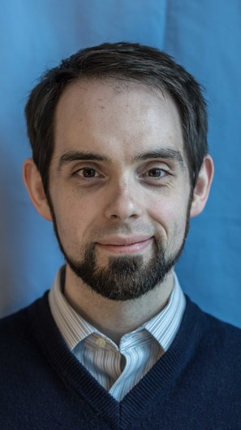

|  |
Nate Bragg
Office: 196 Boston Ave, 4th floor
nate at cs dot tufts dot edu
|
|
I am a PhD student in the
Department of Computer Science
at Tufts University, working on
programming languages with my advisors
Jeff Foster and
Kathleen Fisher.
My primary research interests are related to Program Synthesis,
applications of Convex Optimization, and Resource Analysis.
I'm also generally into weird type systems, event-driven systems,
distributed systems, and machine learning.
|
|
My current work is currently under review for publication.
Take a look at some of my past projects:
- Ratl, a
mini-scheme with a resource-aware type system based on
RaML, by Hoffmann et. al.
It is written in Haskell, and is meant as a sandbox to
play with resource-aware types, in order to explore their
concrete applications.
- Smudge,
a domain-specific language for event-driven state machines,
along with a compiler and run time system, co-created with
my colleague Nathan Michaels.
The compiler is written in Haskell, and generates ANSI C89
output. The run time system, Smear, is written in C99.
|
|
Since summer 2019, I have been funded thanks to the generous support of the
Draper Fellows program.
In the spring 2019, I was an RA for professor
Jeff Foster.
In the spring and fall of 2018, I was a graduate TA for
Comp 105: Programming Languages
with professor Norman Ramsey.
Before returning to graduate school, I spent 12 years in
industry working on cool stuff like embedded systems and machine learning
for companies including Bose and
ADB Airfield Solutions.
Before that, I got my BS in Electrical Engineering at
Rensselaer Polytechnic Institute.
|
|
{kind=link}